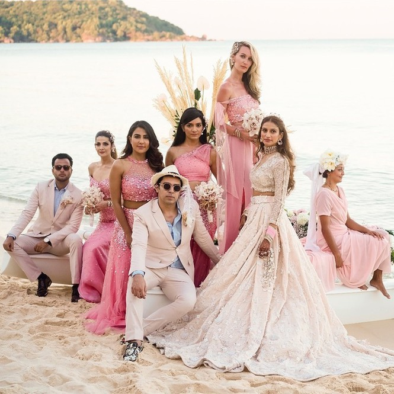
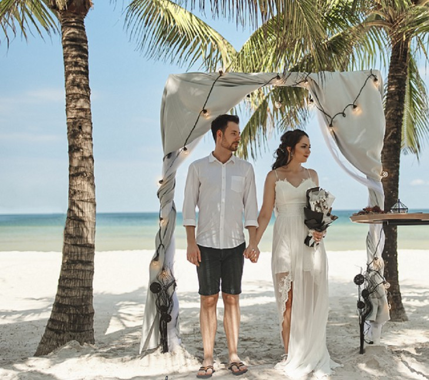
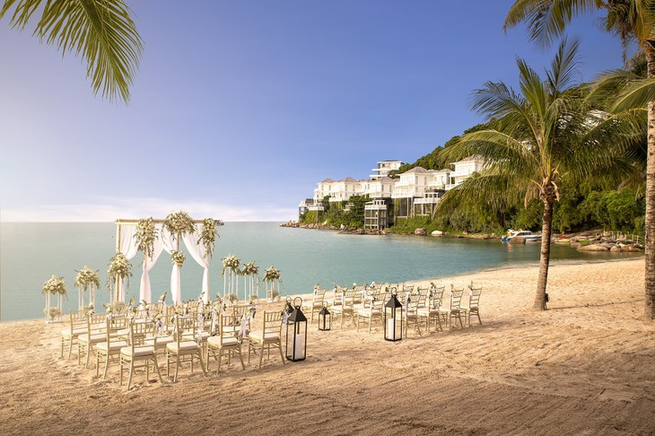
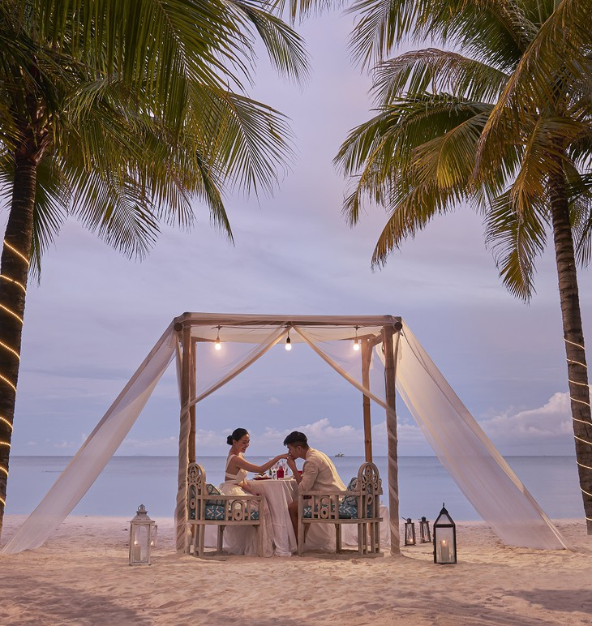
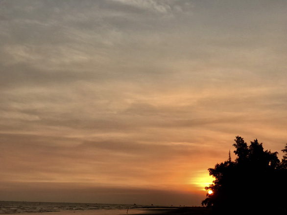

Phú Quốc - Thiên đường đám cưới và trăng mật
Có rất nhiều lý do khiến đảo Ngọc, đặc biệt là Nam đảo trở thành lựa chọn đầu tiên của những cặp uyên ương cho một đám cưới đẹp, ấn tượng hay kỳ trăng mật ngọt ngào.
Thiên đường cho những cặp đôi
Phú Quốc là một trong những điểm đến hiếm hoi của Việt Nam được thiên nhiên ưu ái ban tặng cho cảnh sắc thiên nhiên thơ mộng, lãng mạn với khí hậu dễ chịu, ôn hòa quanh năm. Từng bờ cát dài trắng mịn, làn nước trong xanh, khung cảnh trong lành được ôm ấp bởi cánh rừng nhiệt đới xanh ngắt… đảo Ngọc - một tên gọi khác của Phú Quốc giống như chốn thiên đường được tạo ra để dành cho các cặp đôi.
Đầu năm ngoái, đám cưới của cặp đôi tỷ phú Ấn Độ tại Phú Quốc đã khiến truyền thông trong nước và thế giới chú ý
Không chỉ thiên nhiên ưu ái mà các công trình nghỉ dưỡng được tạo dựng bên các bãi biển đẹp nhất hành tinh ở Phú Quốc cũng dường như được kiến tạo để hướng tới… những đám cưới và tuần trăng mật lãng mạn
Chỉ cần đi khắp dọc khu vực Bãi Kem, Nam đảo, đã có thể cảm nhận ngay sự phù hợp với đám cưới và tuần trăng mật của những khu nghỉ dưỡng sang trọng như JW Marriott Phu Quoc Emerald Bay, Premier Village Phu Quoc hay Premier Residences Phu Quoc Emerald Bay.
Nếu JW Marriott Phu Quoc Emerald Bay mang phong cách sang chảnh, thượng lưu thì Premier Residences Phu Quoc Emerald Bay chính là nơi phù hợp với cặp đôi yêu thích sự trẻ trung, năng động. Ở đó, họ có thể biến đám cưới của mình thành một câu chuyện tình bên bãi biển lãng mạn, hoặc viết lên những khoảnh khắc quan trọng nhất của đời mình bằng một bữa tiệc cưới sôi động, náo nhiệt bên hồ bơi…
Nếu muốn một đám cưới sang trọng nhưng vẫn không kém phần đầm ấm, thì gợi ý chính là Premier Village Phu Quoc Resort tọa lạc tại Mũi Ông Đội. Đây là nơi duy nhất ở đảo Ngọc có thể ngắm hoàng hôn và bình minh từ cùng một vị trí.
Vô số trải nghiệm tăng “gia vị” tình yêu
Không chỉ là thiên đường của những đám cưới trong mơ, Nam đảo Phú Quốc còn là mảnh đất ẩn chứa nhiều sức hút, vô cùng lý tưởng cho một kỳ trăng mật hoàn hảo.

Phía bên kia của hành trình cùng cáp treo là Hòn Thơm - thiên đường nhiệt đới xinh đẹp được mệnh danh Boracay của Việt Nam, nơi ngàn trải nghiệm chờ đón. Cùng chèo thuyền kayak, cùng lướt trên sóng với mô tô nước, hoặc là cùng dắt tay nhau đi dạo dưới lòng biển ngắm san hô hay bay lên trời xanh với dù lượn đôi… Hòn Thơm có thể khiến bạn mê mệt chẳng muốn về bởi càng chơi càng thú vị.
Công viên nước Aquatopia nằm trong khuôn viên Sun World Hon Thom Nature Park cũng là điểm đến hấp dẫn để lưu giữ những kỷ niệm đẹp cho một hành trình trăng mật thật giàu trải nghiệm.

Cưới ở Phú Quốc, trăng mật ở đảo Ngọc tuyệt vời như thế, không khó hiểu khi du lịch cưới đang trở thành một trào lưu của giới trẻ, và Phú Quốc đương nhiên là điểm đến số 1.